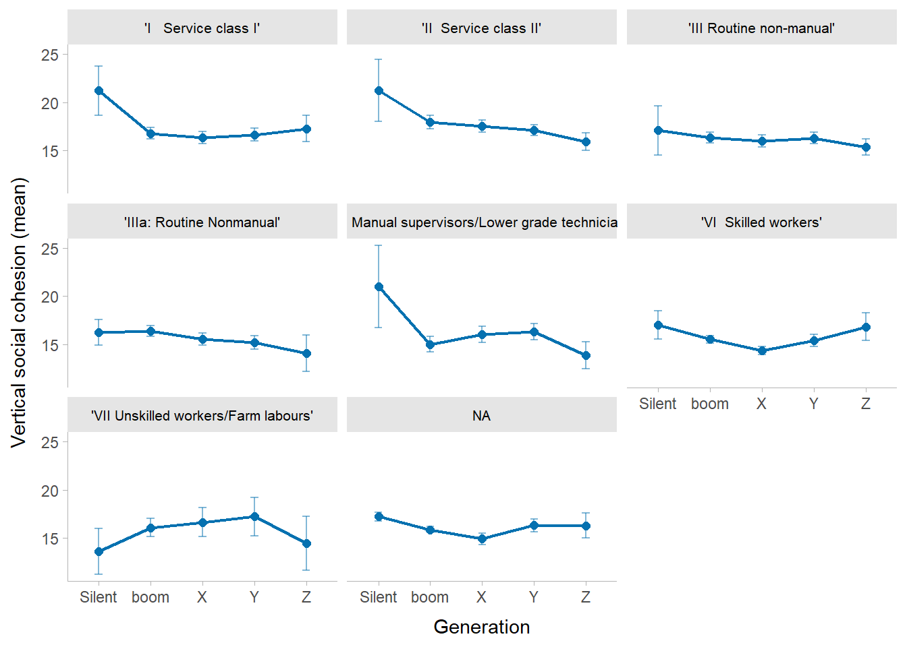
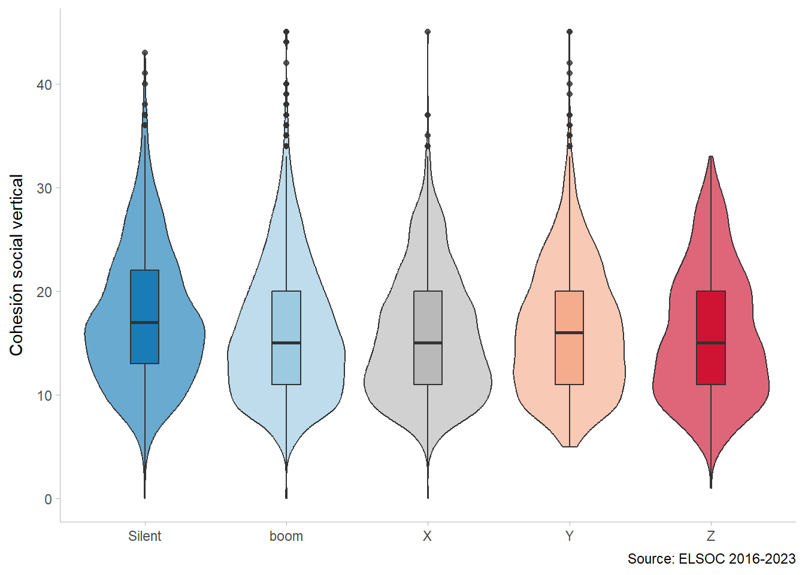
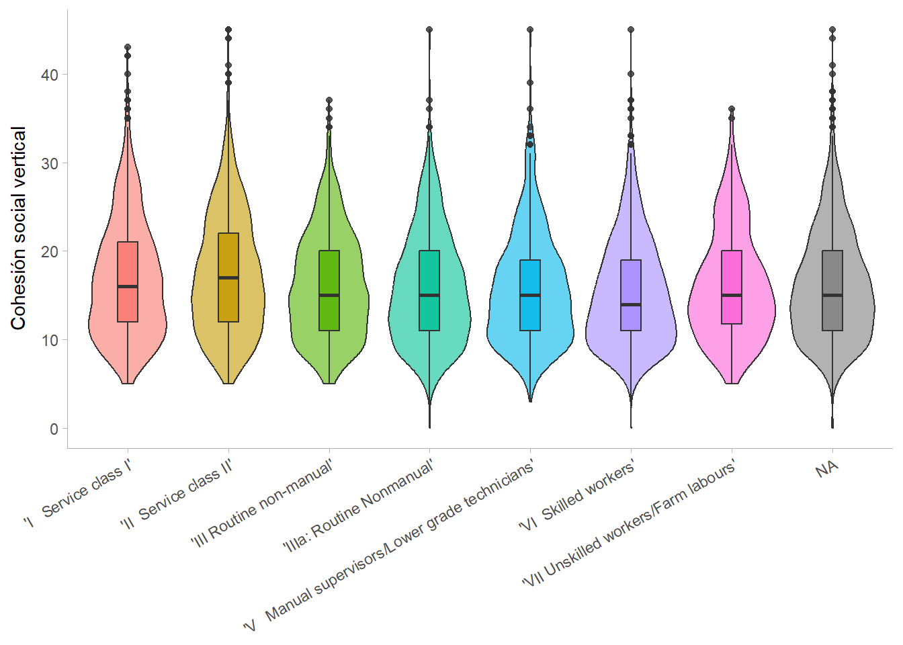
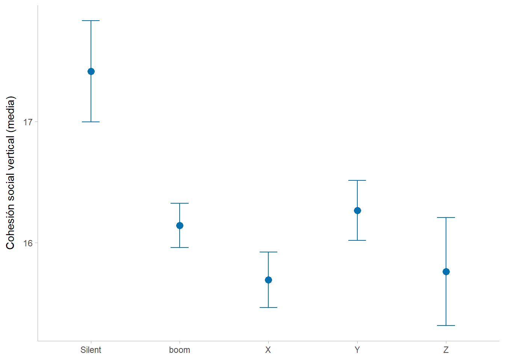

6 Resultados
6.0.1 Analisis descriptivo.
| Characteristic | N = 11,5371 |
|---|---|
| Cohesión social vertical | 16 (6) [0; 45] |
| Percepción de corrupción | |
| 1 | 162 (1.5%) |
| 2 | 408 (3.8%) |
| 3 | 964 (8.9%) |
| 4 | 3,876 (36%) |
| 5 | 5,447 (50%) |
| Edad | 50 (15) [18; 84] |
| Clase social (EGP-7) | |
| 'I Service class I' | 1,303 (15%) |
| 'II Service class II' | 1,551 (18%) |
| 'III Routine non-manual' | 1,360 (16%) |
| 'IIIa: Routine Nonmanual' | 1,239 (14%) |
| 'V Manual supervisors/Lower grade technicians' | 684 (7.9%) |
| 'VI Skilled workers' | 2,209 (26%) |
| 'VII Unskilled workers/Farm labours' | 300 (3.5%) |
| Trato digno | 4.7 (5.3) [0.0; 15.0] |
| Autoidentificación política | 7.2 (3.9) [0.0; 12.0] |
| Orgullo de ser chileno | |
| 1 | 127 (1.1%) |
| 2 | 278 (2.4%) |
| 3 | 679 (5.9%) |
| 4 | 5,873 (51%) |
| 5 | 4,521 (39%) |
| Generación | |
| Silent | 927 (8.0%) |
| boom | 4,800 (42%) |
| X | 2,631 (23%) |
| Y | 2,418 (21%) |
| Z | 761 (6.6%) |
| Ola | |
| Ola 1 | 1,176 (10%) |
| Ola 2 | 1,176 (10%) |
| Ola 3 | 1,837 (16%) |
| Ola 4 | 1,837 (16%) |
| Ola 5 | 1,837 (16%) |
| Ola 6 | 1,837 (16%) |
| Ola 7 | 1,837 (16%) |
| 1 Mean (SD) [Min; Max]; n (%) | |
Analisis bivariado.
data_f %>%
ggplot(aes(x = Generacion, y = c05_total, fill = Generacion)) +
geom_violin(alpha = .6) +
geom_boxplot(width = .2, alpha = .8) +
scale_fill_manual(values = c("#0571B0","#92C5DE","#b3b3b3ff","#F4A582","#CA0020")) +
labs(x = NULL, y = "Cohesión social vertical",
caption = "Source: ELSOC 2016-2023") +
theme_ggdist() +
theme(legend.position = "none")
# Clase social
data_f %>%
ggplot(aes(x = egp7, y = c05_total, fill = egp7)) +
geom_violin(alpha = .6) +
geom_boxplot(width = .2, alpha = .8) +
labs(x = NULL, y = "Cohesión social vertical") +
theme_ggdist() +
theme(legend.position = "none",
axis.text.x = element_text(angle = 30, hjust = 1))
data_f %>%
group_by(Generacion) %>%
summarise(
media = mean(c05_total, na.rm = TRUE),
se = sd(c05_total, na.rm = TRUE) / sqrt(n()),
.groups = "drop"
) %>%
mutate(ci_low = media - 1.96*se, ci_high = media + 1.96*se) %>%
ggplot(aes(x = Generacion, y = media)) +
geom_point(size = 3, color = "#0571B0") +
geom_errorbar(aes(ymin = ci_low, ymax = ci_high),
width = .2, color = "#0571B0") +
labs(x = NULL, y = "Cohesión social vertical (media)") +
theme_ggdist()
Modelos de regresion.
| Model 1 | Model 2 | Model 3 | Model 4 | Model 5 | Model 6 | |
|---|---|---|---|---|---|---|
| Intercept | 15.848*** | 15.711*** | 15.919*** | 22.858*** | 17.831*** | 21.079*** |
| (0.111) | (0.180) | (0.111) | (3.302) | (1.094) | (2.305) | |
| Corruption perception (Grand-mean centered) | -0.805*** | -0.478*** | -0.766*** | -0.493*** | ||
| (0.081) | (0.075) | (0.070) | (0.077) | |||
| Corruption perception (Person historical mean) | -1.608*** | -1.605*** | ||||
| (0.180) | (0.180) | |||||
| Age (Grand-mean centered) | 0.014 | 0.031 | ||||
| (0.008) | (0.045) | |||||
| Age (Specific-mean centered) | 0.032 | -0.246* | ||||
| (0.075) | (0.120) | |||||
| Age (Person historical mean) | -0.018 | 0.014 | ||||
| (0.050) | (0.022) | |||||
| Identificación nacional (Grand-mean centered) | 0.739*** | 0.341*** | 0.464*** | 0.338*** | ||
| (0.091) | (0.083) | (0.076) | (0.083) | |||
| Identificación nacional (Person historical mean) | 0.832*** | 0.839*** | ||||
| (0.213) | (0.212) | |||||
| Dignified treatment (Grand-mean centered) | 0.081*** | -0.063** | -0.093*** | -0.052* | ||
| (0.013) | (0.021) | (0.017) | (0.021) | |||
| Dignified treatment (Person historical mean) | -0.111** | -0.148*** | ||||
| (0.037) | (0.038) | |||||
| Political self-identification (Grand-mean centered) | -0.087*** | -0.111*** | -0.132*** | -0.109*** | ||
| (0.018) | (0.017) | (0.015) | (0.017) | |||
| Political self-identification (Person historical mean) | -0.180*** | -0.186*** | ||||
| (0.041) | (0.041) | |||||
| Sex: Female | -0.083 | -0.290 | -0.107 | |||
| (0.198) | (0.203) | (0.198) | ||||
| Education: Basic | 0.769 | 0.730 | 0.825 | |||
| (0.873) | (0.872) | (0.861) | ||||
| Education: Higher education | 1.762* | 1.728 | 1.817* | |||
| (0.889) | (0.887) | (0.877) | ||||
| Education: Postgraduate | 3.022** | 3.099** | 3.114** | |||
| (1.001) | (1.002) | (0.992) | ||||
| Generation: Boom | -1.065 | -1.515* | -1.047 | |||
| (0.689) | (0.621) | (0.688) | ||||
| Generation: X | -1.308 | -1.978** | -1.287 | |||
| (0.883) | (0.632) | (0.882) | ||||
| Generation: Y | -1.063 | -1.862** | -1.022 | |||
| (1.093) | (0.636) | (1.092) | ||||
| Generation: Z | -1.539 | -2.571*** | -1.498 | |||
| (1.309) | (0.705) | (1.307) | ||||
| Service class II | 0.082 | 0.079 | 0.080 | |||
| (0.251) | (0.258) | (0.255) | ||||
| Routine non-manual | -0.277 | -0.279 | -0.307 | |||
| (0.262) | (0.270) | (0.266) | ||||
| Routine non-manual (IIIa) | -0.506 | -0.542 | -0.508 | |||
| (0.269) | (0.278) | (0.274) | ||||
| Manual supervisors | -0.999** | -0.996** | -1.063*** | |||
| (0.316) | (0.326) | (0.322) | ||||
| Skilled workers | -0.853*** | -0.859*** | -0.908*** | |||
| (0.248) | (0.255) | (0.252) | ||||
| Unskilled workers | 0.323 | 0.226 | 0.252 | |||
| (0.439) | (0.452) | (0.445) | ||||
| Wave 2017 | 2.113*** | 1.403*** | 1.048*** | 1.556*** | ||
| (0.210) | (0.292) | (0.263) | (0.293) | |||
| Wave 2018 | 3.719*** | 3.458*** | 3.174*** | 3.536*** | ||
| (0.195) | (0.223) | (0.241) | (0.257) | |||
| Wave 2019 | -1.800*** | -2.327*** | -2.727*** | -2.065*** | ||
| (0.194) | (0.307) | (0.315) | (0.367) | |||
| Wave 2021 | -4.866*** | -5.603*** | -6.079*** | -5.257*** | ||
| (0.195) | (0.332) | (0.372) | (0.429) | |||
| Wave 2022 | 0.712*** | 0.031 | -0.400 | 0.548 | ||
| (0.195) | (0.383) | (0.479) | (0.543) | |||
| Wave 2023 | 3.043*** | 2.227*** | 1.761*** | 2.676*** | ||
| (0.210) | (0.418) | (0.533) | (0.593) | |||
| Interaction: Age (within) × Age (between) | 0.004* | |||||
| (0.002) | ||||||
| BIC | 51120.934 | 48412.698 | 50955.309 | 48207.816 | 48233.575 | 48189.081 |
| Numb. obs. | 7979 | 7979 | 7979 | 7979 | 7979 | 7979 |
| Num. groups: individuals | 1372 | 1372 | 1372 | 1372 | 1372 | 1372 |
| Var: individuals (Intercept) | 11.697 | 12.197 | 10.822 | 8.643 | 9.588 | 8.796 |
| Var: Residual | 28.789 | 19.238 | 28.144 | 18.978 | 17.892 | 17.741 |
| Var: individuals, age (within) | 0.185 | 0.197 | ||||
| Cov: individuals (Intercept-age) | 0.008 | -0.082 | ||||
| Note: Cells contain regression coefficients with standard errors in parentheses. ***p < 0.001; **p < 0.01; *p < 0.05. | ||||||
El análisis de los determinantes de la cohesión social vertical en Chile, sustentado en una estructura longitudinal de 7,979 observaciones anidadas en 1,372 individuos a lo largo de cinco modelos jerárquicos, revela importantes hallazgos en su especificación completa (Modelo 5). En cuanto a los predictores de percepción a nivel inter-individual (efectos between), el sentido de pertenencia ejerce un impacto positivo y altamente significativo (\(\beta = 0.464\); \(p < 0.001\)), mientras que la percepción de corrupción se posiciona como uno de los detractores más robustos del modelo con un marcado coeficiente negativo (\(\beta = -0.766\); \(p < 0.001\)). Asimismo, la variable de trato digno—que operacionaliza el conflicto de clase—muestra que a mayor conflicto percibido, menor es la cohesión vertical (\(\beta = -0.093\); \(p < 0.001\)), aportando evidencia para la hipótesis \(H_2\), al tiempo que la auto-identificación política presenta un efecto negativo significativo (\(\beta = -0.132\); \(p < 0.001\)); a mayor identificacion con la derecha, menor es la cohesión vertical. Respecto a las características estables del individuo (Nivel 2), se confirma la hipótesis \(H_1\) sobre la brecha generacional, evidenciando que, en comparación con la cohorte más antigua, todas las generaciones posteriores exhiben una cohesión vertical significativamente menor, con un efecto más dramático en la Generación Z (\(\beta = -2.571\); \(p < 0.001\)), seguida por la Generación X (\(\beta = -1.978\); \(p < 0.01\)) y los Millennials (\(\beta = -1.862\); \(p < 0.01\)); por su parte, el nivel educativo solo arroja un efecto positivo y significativo en el grupo de postgrado (\(\beta = 3.099\); \(p < 0.01\)), mientras que el sexo no reporta significancia estadística (\(\beta = -0.290\)). El contexto temporal captura con nitidez el impacto de la crisis del estallido, reflejando caídas estrepitosas en la cohesión vertical durante la Ola 2019 (\(\beta = -2.727\); \(p < 0.001\)) y la Ola 2021 (\(\beta = -6.079\); \(p < 0.001\)) a proposito del estallido social y la pandemia, seguidas de un leve repunte o estabilización en la Ola 2023 (\(\beta = 1.761\); \(p < 0.001\)). Finalmente, el examen de los efectos aleatorios complementa este escenario al registrar una reducción de la varianza del intercepto de 11.697 en el modelo nulo a 9.588 en el Modelo 5, demostrando que las variables de Nivel 2 explican una parte importante de la heterogeneidad basal; asimismo, la varianza de la pendiente aleatoria para la edad intra-individual (0.185) junto a una covarianza intercepto-pendiente positiva pero marginal (0.008) confirman la existencia de trayectorias de cambio divergentes en el tiempo, mientras que el descenso de la varianza residual desde 28.789 hasta 17.892 constata que la inclusión de percepciones temporales dinámicas logra explicar una porción crítica de la variabilidad longitudinal de la cohesión en la población chilena.